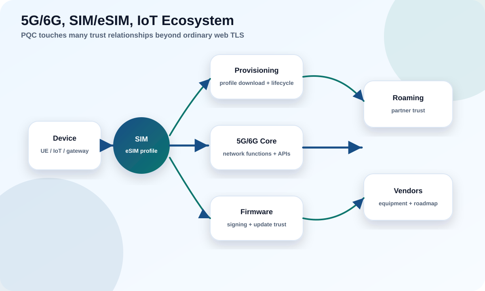

Telecom is where every hard PQC problem meets at once: identity at massive scale, roaming across operators you do not control, tiny secure elements, and devices that live in the field for a decade or more.
Explain why telecom PQC is a cross-operator ecosystem problem.
Locate PQC touch points in 5G authentication and SIM/eSIM provisioning.
Plan for constrained, long-lived IoT and device fleets.

Try it: what happens when an eSIM profile is downloaded
eSIM provisioning is a chain of signed and encrypted steps across several parties. Step through where PQC will land.
Read the pattern
The identity/PKI and key-establishment steps are the PQC targets; the constrained secure element is the sizing challenge; and no single operator controls the whole chain.
1
Telecom PQC is an ecosystem problem
A phone call or data session crosses devices, SIMs, radios, cores, and often multiple operators — owned by different companies.
No single organization can "turn on PQC" for a mobile network. Device vendors, SIM/eUICC makers, network-equipment vendors, operators, roaming partners, and standards bodies (3GPP, GSMA) must move in a coordinated way. That is why telecom relies on standards and long lead times, and why crypto-agility is essential: you are negotiating change across a federation.
Takeaway
Treat telecom PQC like international PKI migration: the slowest interoperating partner sets the pace, so agility and standards alignment matter more than any single clever implementation.
2
5G and future 6G trust layers
5G already improved subscriber-identity privacy; PQC extends that trajectory into 6G-era design.
5G introduced concealment of the long-term subscriber identifier (SUPI) using a public-key scheme (SUCI) so the identifier is not sent in the clear — that public-key step is a natural PQC candidate. Core network functions authenticate each other over TLS-based interfaces (SBA), which inherit the TLS PQC story from PQC-202. The subscriber authentication itself (5G-AKA) is largely symmetric and less directly affected. 6G is being designed with quantum-safe assumptions from the start.
Concrete example
The SUCI concealment that hides your permanent identity uses elliptic-curve public-key cryptography today. A quantum adversary who harvested those exchanges could later de-conceal identifiers — a privacy harvest-now-decrypt-later case, motivating PQC there.
3
SIM and eSIM lifecycle
The (e)SIM is a tiny, hardened computer with real constraints — and a long, multi-party trust chain.
SIM/eSIM provisioning (GSMA RSP) relies on a certificate hierarchy and secure channels, as you saw in the walkthrough. The challenges: the eUICC secure element has limited memory and compute, so larger PQC keys and signatures are a genuine fit problem; and the trust hierarchy spans device makers, SIM vendors, and operators who must all support the new algorithms.
Common pitfall
Assuming a server-side upgrade suffices. If the eUICC or the GSMA trust chain cannot handle PQC certificate sizes and algorithms, profile provisioning simply fails.
4
IoT, firmware, and long-lived devices
Field devices combine every worst-case factor: constrained hardware, long life, and hard-to-update verifiers.
New hardware with PQC/dual verification; compensating controls
Intermittent connectivity
Hard to push updates
Robust, resumable, signed update channel
Takeaway
For device fleets, the decision made at manufacture dominates. Build agility and PQC-capable verification into new hardware now, because you cannot retrofit an immutable verifier later.
Hands-on labs
Decide first, then reveal.
Lab 1 · Roaming partner lag
Your network supports PQC, but a roaming partner does not.
What determines the effective security of a roaming session?
Recommended answer The weaker partner. Interworking falls back to what both support, so the slowest partner sets the pace. Track partner roadmaps and use standards/contracts to drive alignment; agility lets you upgrade the moment they do.
Lab 2 · eUICC won't fit
A chosen PQC signature is too large/slow for the current eUICC.
What are your options?
Recommended answer Select a smaller/faster parameter set or family suited to the constraint (verification speed and size matter most), work with the secure-element vendor on next-gen hardware, and stage the trust-chain upgrade so servers and chips move together.
Lab 3 · 10-year meter
You are specifying a utility meter that must run for 12 years.
What is the single most important PQC decision, and when?
Recommended answer At design/manufacture: make the firmware verifier crypto-agile and PQC-capable (or dual-verify). You cannot fix an immutable verifier in the field, so the manufacturing decision dominates the device's whole life.
Knowledge check
Score 70%+ to mark this module complete.
Score: 0/0
Primary sources
Educational; consult 3GPP/GSMA and vendors for current specifics.